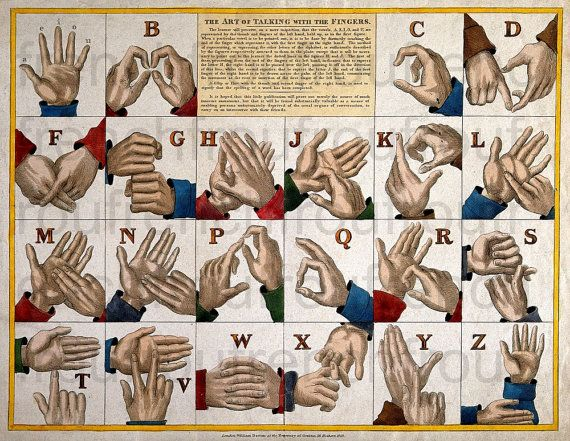
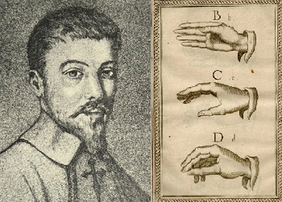
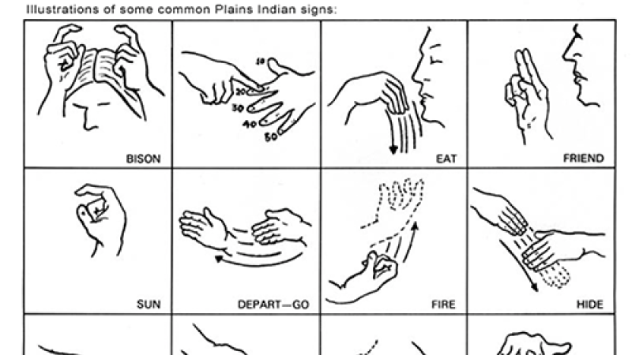
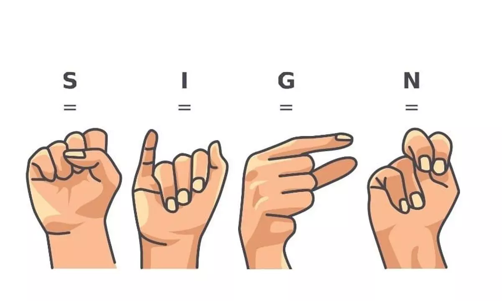

The Origins of Sign Language
The recorded history of sign language in Western societies starts in the 17th century, but references to hand gesture communication date back as far as 5th century BC Greece. Sign language is composed of conventional gestures, mimic, hand signs, and finger spelling. It uses hand positions to represent the alphabet and can convey complete ideas or phrases.
Sign Languages Around the World
Many sign languages have developed independently throughout the world, and no first sign language can be identified. Both signed systems and manual alphabets have existed globally. Historically, documentation is mostly limited to manual alphabets used to transfer words from oral to sign language.
Influential Figures and Historical Events
Juan Pablo Bonet's work in the 17th century was one of the earliest efforts to formalize sign language education. In 1620, he published a book outlining the use of a manual alphabet for teaching speech to the deaf. In Paris, Abbé Charles Michel de l'Épée established the first school for the deaf, leading to the development of French Sign Language. American Sign Language (ASL) is heavily based on this system.
Sign Language in Different Cultures
In Native American communities, sign languages were used as a lingua franca for trade, ceremonies, and storytelling. Plains Indian Sign Language is an example of a complex system used by both deaf and hearing members for communication.
The Evolution of Sign Language Education
Throughout history, the education of deaf individuals has shifted between using sign language and oral methods. In 1880, the Milan Conference favored oralism, which discouraged the use of sign language in education. However, modern research has shown that early exposure to sign language helps with language acquisition and cognitive development in deaf children.
Sign Language Today
Today, sign languages are recognized as full-fledged languages. Schools now adopt a "Total Communication" philosophy, which includes the use of both oral and signed methods. American Sign Language, British Sign Language, and many others have been fully developed and continue to evolve.